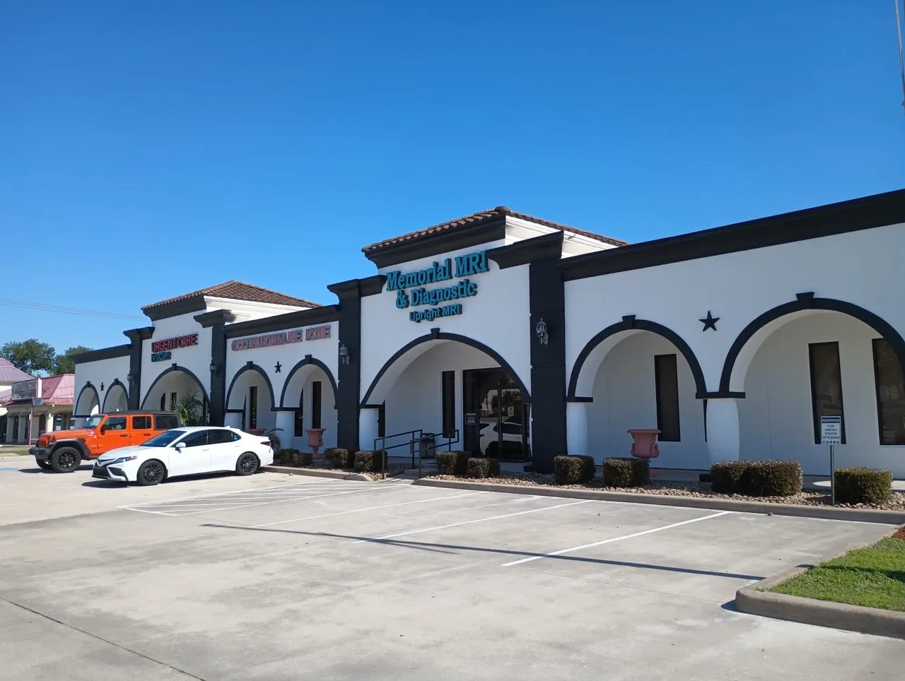
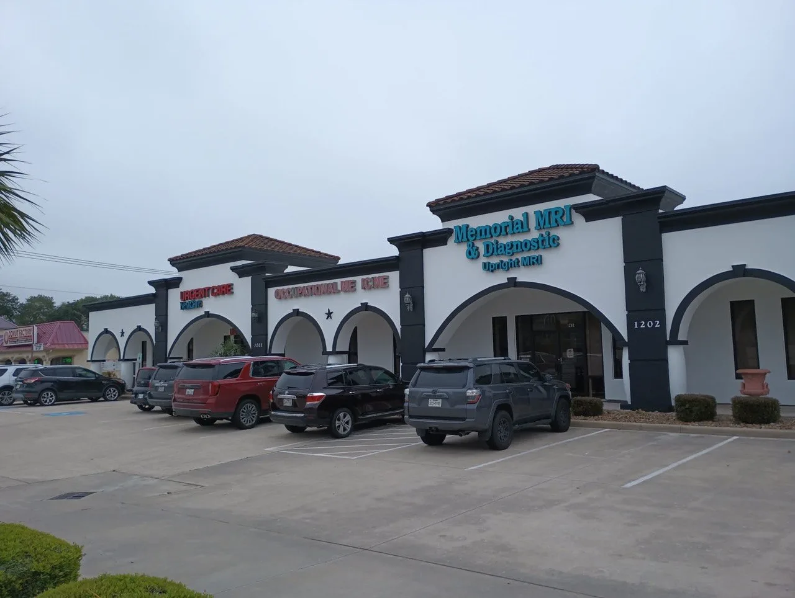
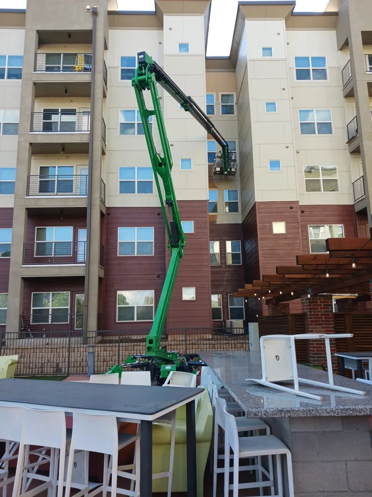
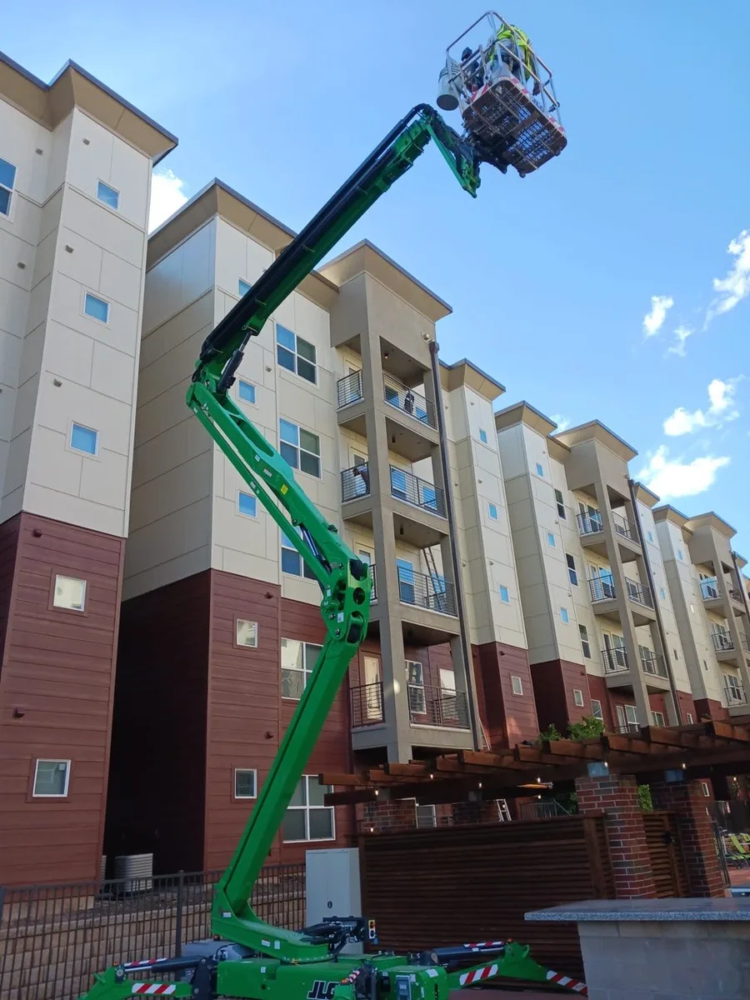
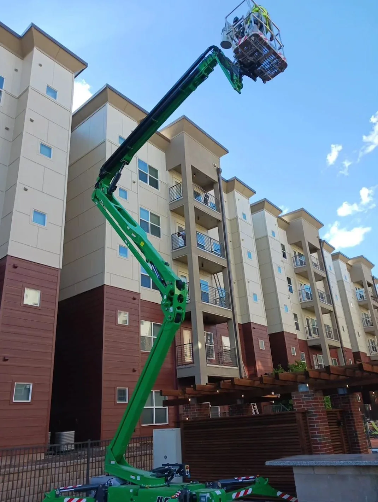
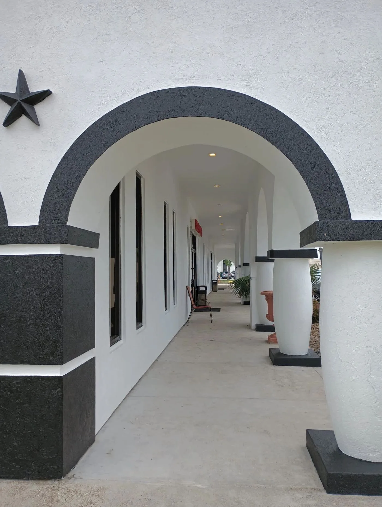
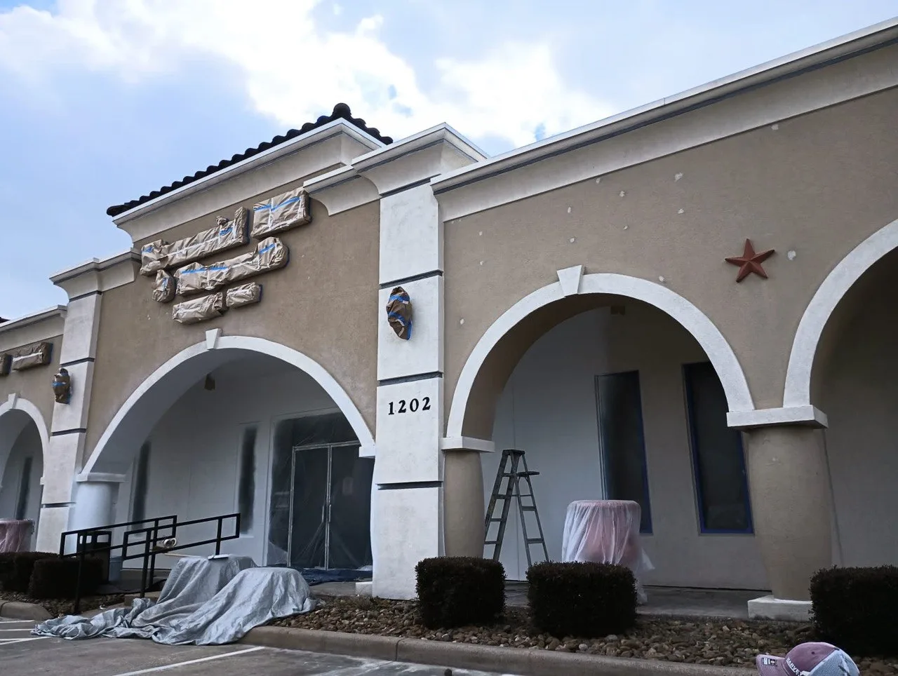

Fresh Paint. Lasting Impressions.
Professional Exterior Painting in Houston, TX
- Interior & Exterior
- Free Color Consultation
Greater Houston's Trusted Residential & Commercial Painting Contractor
A professional paint job is one of the most cost-effective ways to refresh, protect, and enhance the appearance of your property. At Longhorn Hardscape & Construction, we provide expert interior painting, exterior painting, and commercial painting services for homeowners and businesses throughout Greater Houston, Missouri City, Sugar Land, Katy, and Pearland.
Whether you're updating a single room, refreshing your home's exterior, repainting an office, or completing a multi-unit commercial project, our experienced team delivers meticulous surface preparation, premium paints, and exceptional attention to detail. From drywall repairs and surface preparation to the final coat, every project is completed with quality craftsmanship and a commitment to a clean, professional finish.
From your complimentary on-site consultation through project completion, we provide clear communication, detailed estimates, and dependable service to ensure beautiful, long-lasting results you'll be proud of.

Painting & More Options We Build in Houston
Exterior Home Painting
Full exterior repaints — siding, trim, shutters, doors, and soffits — using premium weather-resistant paints rated for Texas conditions.
Fence & Gate Painting
Wood fence staining and painting that protects against UV damage and moisture, extending the life of your fence significantly.
Concrete & Masonry Painting
Decorative and protective coatings for concrete driveways, patios, walls, and foundations — epoxy, elastomeric, and more.
Garage Doors
Garage door repaints and refinishes that dramatically improve your home's street presence.
Outdoor Structures
Pergolas, patio covers, outbuildings, and outdoor kitchens painted or stained to match your home's color scheme.
Surface Prep & Repairs
Proper prep is everything — we patch cracks, prime surfaces, and address moisture issues before any paint touches your home.
Why Choose Longhorn for Your Houston Painting & More
Surface Prep First, Always
We power wash, scrape, sand, and prime every surface before a drop of paint goes on. That's the difference between a finish that lasts 3 years and one that lasts 10.
Premium Paint, Not Contractor Grade
We use Sherwin-Williams Duration or equivalent exterior product — not the contractor-grade paint that chalks, fades, and peels inside two Houston summers.
Houston Humidity Expertise
Paint adhesion fails when humidity is wrong. We know what primers hold in this climate, which weather windows to target, and how to prep surfaces that have taken on moisture.
Residential & Commercial Capacity
From a single accent wall to a 200-unit apartment complex exterior, we scale our crew to your project — so the timeline stays realistic and the job finishes clean.
Painting & More Areas We Serve
We serve Greater Houston and surrounding Fort Bend County communities.
Painting & More FAQs — Houston
We use professional-grade paints from Sherwin-Williams and Benjamin Moore — specifically their exterior lines rated for high UV and humidity environments like Houston's.
With proper prep and quality paint, exterior paint should last 7–10 years in Houston. Improper prep or budget paints may only last 3–5 years. We do the prep right the first time.
Yes, every exterior paint project includes thorough surface cleaning, power washing, scraping loose paint, priming bare wood, and caulking gaps before painting begins.
We can match any existing color with precision. We also offer color consultation to help you choose a scheme that complements your home's architecture and neighborhood.
Painting Projects in Houston, TX
Interior and exterior painting services for homes and commercial properties across Greater Houston.






Ready for a Free Painting & More Estimate?
We'll visit your property, review the full scope, and hand you a written estimate with a firm completion date — before we start a single thing.